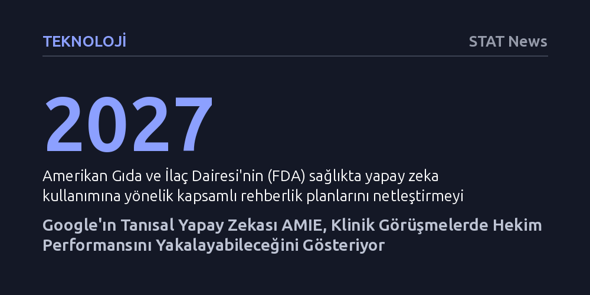

TEKNOLOJI · STAT News · 2026-10-14
Google'ın tanısal yapay zekası AMIE, simüle klinik görüşmelerde öykü alma ve tanı isabetinde hekimleri yakalayan bir başarı gösterdi. Bulgular, yapay zekanın birinci basamak sağlık hizmetlerini dönüştürme potansiyelini kanıtlarken gerçek klinik ortamlar için sıkı denetim ve regülasyon ihtiyacını vurguluyor.
Yapay zekanın tıpta yalnızca veri ve görüntü analizinde değil, hekimliğin en kritik boyutu olan hasta iletişimi ve klinik muhakemede de uzman hekimlerle yarışabilecek düzeye ulaştığını gösterir.

Yapay zekanın sağlık sektöründeki yolculuğu uzun süredir radyoloji taramaları, genetik veri analizleri veya idari iş akışlarının hızlandırılmasıyla sınırlıydı. Ancak Google'ın geliştirdiği AMIE (Articulate Medical Intelligence Explorer) adlı tanısal sohbet botu, tıp teknolojisinde çıtayı doğrudan hekim-hasta ilişkisinin merkezine taşıyor. Sistem, yalnızca arka planda çalışan bir analiz aracı olmakla kalmayıp, hastayı doğrudan dinleyen, sorular soran ve karmaşık semptomları ayrıştıran interaktif bir klinik diyalog yürütüyor.
Sağlık hizmetlerinde yapay zekanın hastayla kurduğu bu doğrudan temas, tıp dünyasında uzun süredir temkinle yaklaşılan bir tabuyu yıkmayı hedefliyor. AMIE, büyük dil modellerinin klinik muhakeme kabiliyetini özel tıbbi veri setleriyle birleştirerek, hastanın şikayetlerini kapsamlı bir öyküye dönüştürme ve ardından olası tanıları sıralama konusunda insan hekimlerin klinik reflekslerini taklit etmek üzere kurgulandı.
Lancet Health Tech dergisinde değerlendirilen çalışma, AMIE'nin performansını ölçmek amacıyla tıp eğitiminin altın standardı kabul edilen nesnel yapılandırılmış klinik sınavları (OSCE) temel aldı. Standartlaştırılmış aktör hastalarla yürütülen görüşmelerde yapay zeka, birinci basamakta görev yapan uzman hekimlerle doğrudan karşılaştırıldı. Bağımsız uzman hekimlerden oluşan hakem heyeti, tarafların kimliğini bilmeden görüşme kayıtlarını tanı isabeti, klinik öykü eksiksizliği ve iletişim kalitesi açılarından inceledi.
Elde edilen bulgular, yapay zekanın sadece tanı doğruluğunda hekimleri yakalamakla kalmadığını, aynı zamanda empati, net açıklamalar yapma ve ayrıntılı sorular sorma gibi iletişim parametrelerinde de şaşırtıcı biçimde yüksek puanlar aldığını ortaya koydu. Hekimlerin yoğun klinik tempo altında atlayabildiği bazı ayrıntılı soru dizilerini AMIE'nin sistematik biçimde sürdürebilmesi, sistemin en dikkat çekici teknik başarısı olarak öne çıktı.
Bu değerlendirme, küresel ölçekte derinleşen hekim açığı ve birinci basamak sağlık hizmetlerindeki aşırı iş yükü düşünüldüğünde stratejik bir dönüm noktasına işaret ediyor. Randevu sürelerinin birkaç dakikaya indiği ve hekimlerin hasta dinlemek yerine ekrana veri girmek zorunda kaldığı mevcut sistemde, AMIE benzeri araçlar hastanın ön değerlendirmesini yaparak hekime yapılandırılmış bir klinik özet sunma potansiyeli taşıyor.
Bununla birlikte uzmanlar, bu teknolojinin hekimlerin yerini alacak bağımsız bir tanı mekanizması değil, klinik süreci hızlandıran ve hekimin karar kalitesini artıran bir ön eleme katmanı olarak konumlandırılması gerektiğinde birleşiyor. Modelin doğru entegrasyonu, özellikle sağlık hizmetlerine erişimin kısıtlı olduğu kırsal bölgelerde erken tanı ve doğru yönlendirme imkanlarını önemli ölçüde genişletebilir.
Laboratuvar ortamında veya simüle edilmiş aktör hastalarla elde edilen başarının gerçek dünya pratiğine taşınması ciddi riskler barındırıyor. Gerçek hastaların sunduğu çelişkili ifadeler, aynı anda var olan birden fazla kronik hastalık ve sosyoekonomik arka planın yarattığı belirsizlikler, kontrol altındaki sınav senaryolarından çok daha karmaşıktır. Yapay zekanın olası bir 'halüsinasyon' veya yanlış yönlendirme durumunda doğuracağı klinik zararların yasal sorumluluğu ise halen gri bir alanda bulunuyor.
Bu belirsizlikler, denetleyici kurumların takvimine de yansımış durumda. Amerikan Gıda ve İlaç Dairesi'nin (FDA) klinik yapay zekaya ilişkin kapsamlı düzenleme ve rehberlik planlarını netleştirmeyi öngördüğü 2027 yılına kadar, bu tip tanısal araçların bağımsız klinik kararlar almasına izin verilmesi beklenmiyor. Teknolojinin güvenilirliği, ancak gerçek klinik ortamlarda yapılacak çok merkezli ve uzun soluklu denemeler sonucunda tescillenebilecektir.